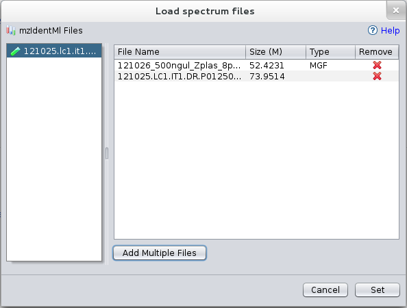

Load spectrum files before mzIdentML loading
If you know the folder and the MS files associated with your mzIdentML you can add them before loading the mzIdentML file.

Click on Add spectra files button to associate to each mzIdnetML files the spectra files.
The table below gives a short description for every column in the Spectrum File Table.
| Column | Description |
| File Name | The name of the File added |
| Size(M) | The size of experiment file to download in megabyte. |
| Type | MS File Type: pkl, mgf, dta, ms2, mzML, mzData |
| Remove | Button to remove the added file |
You can choose Set Button to continue with the loading process.